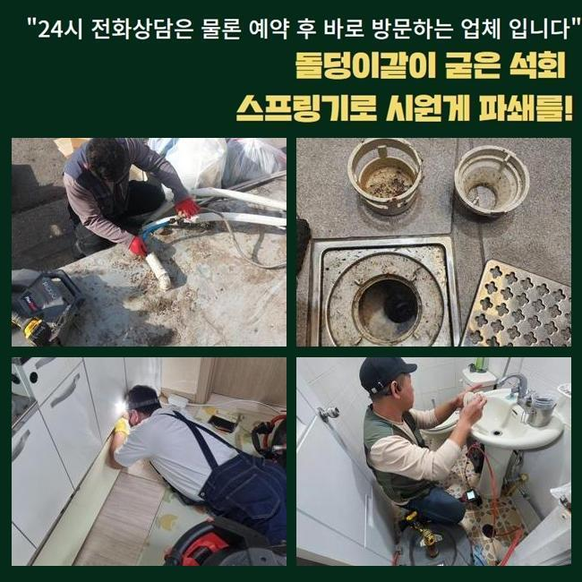
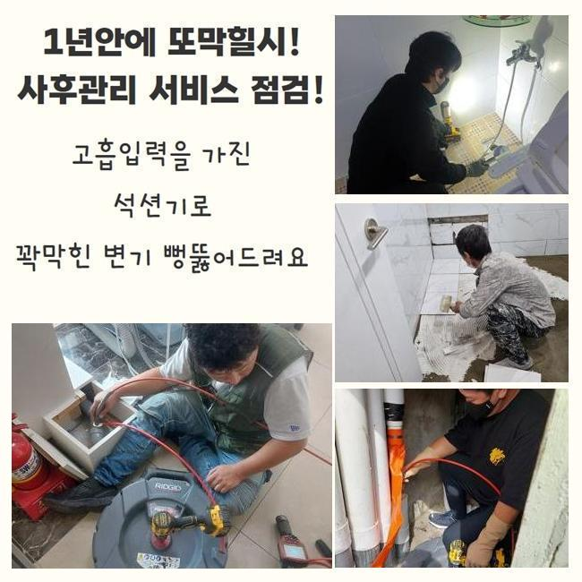
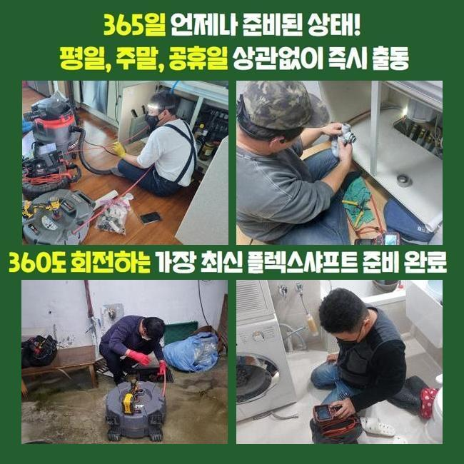
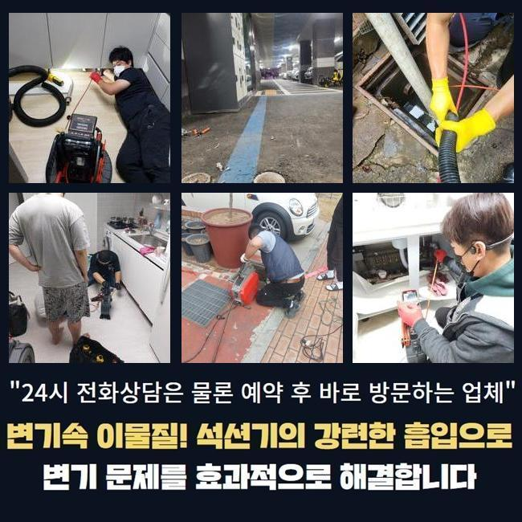
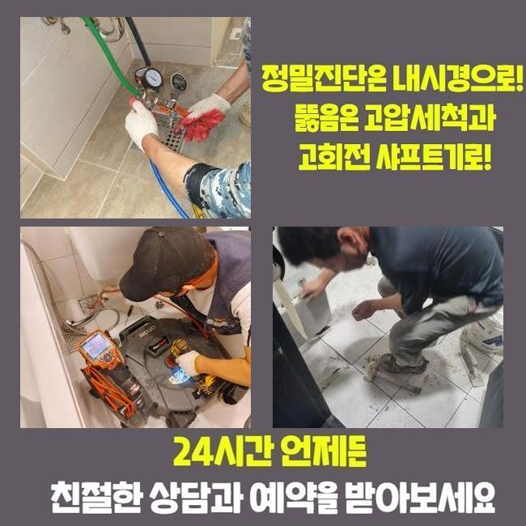
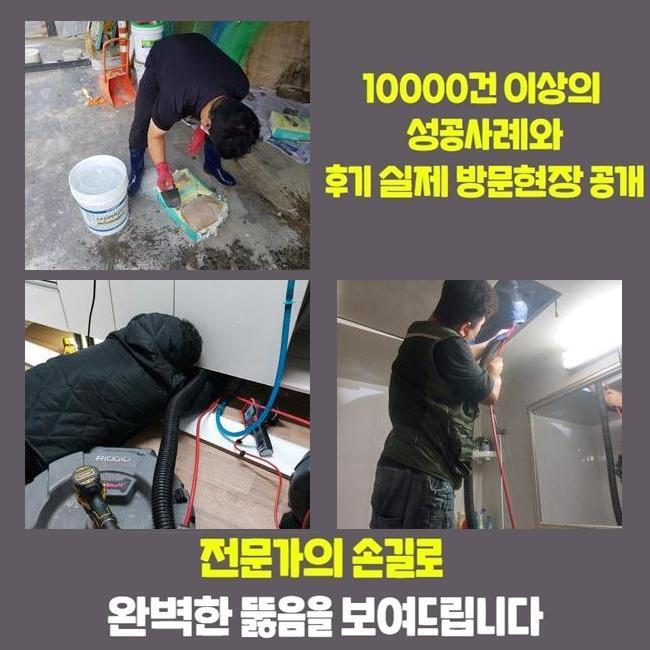

🏠 정왕본동화장실하수구막힘 금이동 오수맨홀청소 누수공사
용인 정왕본동 하수구막힘 전문 시공 후기

📋 작업 개요
- 위치: 용인 정왕본동, 정왕본동, 용인
- 서비스 유형: 하수구막힘, 배관막힘, 맨홀막힘, 집수정막힘, 누수수리, 역류해결, 배관청소, 고압세척, 설비공사
- 작업 일시: 2025. 6. 4. 20:56
- 업체명: 하수구수사대 (010-5615-2118)
🔍 문제 상황
정왕본동화장실하수구막힘 금이동 오수맨홀청소 누수공사
어제 아파트 욕실 배수관 역류사태로 고객님이 일상이 어려운 상황이라며 진단을 요청하셨어요
그날 바로 이동하여 사태를 파악하고 진단해 드렸는데요
간소한 도구만을 가지고 대처한다면 또다시 배관막힘이 발현될걸로 예측되었습니다
그렇기 때문에 근원적인 처치 방도를 마련해야 했죠
그러려면 배수설비와 결부된 개략적인 관련성도 알아보아야 하겠죠
그렇기때문에 물막힘이 발발한 욕실을 조사하는걸 포함하여 정화설비도 조사해볼 필요가 있어요
정화설비 안은 크고작은 잔존물로 가득하였으며 고약한 냄새도 올라오는 상태였어요
이곳은 20세대 이상이 거주중이므로 중앙 관로나 정화조는 1년에 1회이상은 소제하는것이 바람직합니다
그렇지만 평상시 주기적 청소가 안되어 지속적으로 잔재들이 누증되는 양상을 띠었고 눈으로도 바로 목견되었답니다
이런 부분들을 의뢰인께 이야기드렸고 시공은 다음날 진행해달란 요청을 하셨어요
저희는 다음날 장비일체를 챙겨 재방문해 드렸죠

🔎 원인 분석
💡 전문가 진단: 정밀 진단 장비를 사용하여 슬러지의 고착 여부를 판명하고 타격/세척 작업을 실시했습니다.
해당되는 시공은 검사와 공사과정으로 나뉘는데 이게 방문드린 당일에 동시적으로 이루어질때가 대부분이지만 현장 상황에 따라서 이틀정도의 시간에 시행되기도 한답니다
의뢰인께서 수리하기 전에 작업장 주위를 정리하셨기에 보다 조속하게 세척이 이행되었어요
재점검 결과 유분으로 가득한 이물질들과 여러가지 침전물들로 정화설비가 오손되어 있었답니다
오물탱크 정리가 난해한 것은 복잡하게 얽혀진 상태의 잔재들을 그물 등으로 전부 제거하고 고압물세척을 시행해야 돼서죠
집수시설이 비좁은 형태로 형성되어 여러번 뜰채망으로 치우는 업무를 이행해야 한다는것이 강도면에서 어려움을 가중시킵니다
하지만 이것이 이행되지 않는다면 해결이 난망하므로 다소 까다롭더라도 감행해야 되겠죠
상당한 부피의 슬러지들이 뒤섞여 오취가 진동하는 정황이었고 지저분한 정화시설 안에서 작업을 이어나가야 하므로 사람들이 피하는 업무이기도 합니다
견고하게 굳어져있는 찌꺼기의 상태가 어마어마했습니다
1년에 1회이상은 청소를 하면 이정도로 사이즈가 큰 퇴적물은 발생을 안하는데 오랜기간 세척을 안했기에 거대한 용량의 노폐물들을 정리해야 됐죠
저희는 집수시설 내부를 사전적으로 관찰하였기에 포대자루를 충분하게 가지고 갔죠
집수정 옆으로 폐기물이 연속해서 누증되었고 마침내 제거작업이 마무리되었답니다
세척이 올바르게 시행되지 않는다면 추후시공 진행이 늦추어지기도 하기에 한층더 철저히 시공을 해나가고 있어요
뜰채로 치우는 업무를 1시간가까이 진행하였고 배관카메라로 관속을 점검합니다

🔧 작업 과정
배관카메라는 바깥으로 노현된 잔존물을 비롯해서 하수관 곳곳의 형편도 정확히 진단하게 해줍니다
그리고 관찰중 누수증세도 확인할수 있다는걸 안내합니다
1층과 2층 화장실배관의 역류증세도 일어났던 터라 하수관안을 자세하게 들여다본 뒤 막힘을 촉발한 포인트를 분명하게 파악하고 물세척 과정을 밟아야 돼요
내시경으로 분석하니 예상대로 침전물이 배관측면에 누증되어 길목이 비좁은 상태였어요
하단으로 내려갈수록 막힘이 심화되어 1층에 역류가 생기는 일까지 발발하게 된겁니다
적층된 기름때와 퇴적물을 처치하는덴 고수압 세정만큼 우수한 방안은 없다고 볼수 있어요
통념적으로도 갖가지 오염물질을 깔끔하게 없애려면 데운물이 당연히 확실히 좋을겁니다
그러므로 막힘이 생겼다면 해당하는 공정이 원활한 지점으로 의탁하는게 합당합니다
구조물 쪽으로 이동해 호스줄을 관로 속에 제대로 밀어넣었고 20회 가량 고수압 세척을 시행하였습니다
고객님께서 막힘현상을 처치해 보고자 끓인물을 안에 활용하시는데 그럴때에 도리어 관로의 균열이 발발할수도 있어요
급격하게 생긴 반응으로 인해서 배수관이 누그러지거나 파손되는 때도 있어서죠
저희측은 해당 문제점을 충분히 고려해서 적절한 조절을 바탕으로 시공을 진행해드립니다
배수관에 이상을 초래하지 않고 파이프속에 견고하게 고착화된 침전물들을 제거해낼 레벨의 작업이라고 이야기해드릴수 있겠네요
배수관에 고착화된 석회찌꺼기와 다양한 잔존물이 소멸되면서 파이프가 정리되었습니다
찌꺼기들이 소멸되는 정황을 관찰하니 사태의 심각함을 분명히 이해하게 되었답니다
10회 이상 물세정 공정을 시행하며 배관을 전반적으로 정리하니 길목이 넓어지더라고요
집수정 주변에서 풍기던 오취도 완전히 없어졌고요
작업을 마친다음 내시경cctv를 사용해서 관내부를 점검하였어요
찌꺼기들이 깔끔하게 소제되었고 작업한 장소 주변또한 청결히 청소해드렸어요
만일에 노폐물이 배관과 일체화되어 물세척으로 처리가 힘겨웠다면 샤프트기를 썼겠으나 다행스럽게도 물만으로도 해결되었네요


✅ 작업 완료
따라서 처음에 생각해두었던 것보다 재빠르게 공정이 종결되었어요
고객께는 일상중에 막힘이 생겼을때 어떤 방식으로 행동해야 되는지 명확하게 설명드리게 되었답니다
화장실이나 주방에서 물이 안내려간다면 여러 도구를 동원해서 고쳐보려고 하는 경우가 많은데요
그러는 와중에 아래세대의 누수문제로 이어지기도 합니다
그러하기에 물막힘이 시작되었다면 될 수 있는대로 빨리 전문수리팀에 전화해서 수리를 요구하시는 게 먼저에요
전화주시면 신속히 출동하여 고장을 정리해드릴게요




⚠️ 베란다 누수 및 방수 관리 방법
- ✅ 비가 많이 올 때 창틀 주변이나 아래층 천장에 얼룩이 생기는지 정기적으로 확인해 보세요.
- ✅ 우수관 주변 실리콘 마감이 들뜨거나 깨진 틈새가 있는지 손상 여부를 수시로 체크하세요.
- ✅ 베란다 바닥 타일의 줄눈(메지)이 소실되면 그 틈으로 물이 침투하여 누수가 유발됩니다.
- ✅ 누수 의심 증상 발견 시 방치하면 아래층 손실이 커지므로 즉시 전문가의 진단을 받으십시오.
💡 핵심 정리
- 확실한 장비 작업(내시경 점검 및 샤프트 스케일링)으로 원인을 뿌리 뽑습니다.
- 작업 후 1년 이내에 동일한 부위 재발 시 100% 무상 A/S 서비스를 보장합니다.
- 서울 · 경기 · 인천 전 지역에 24시간 언제든 긴급 출동할 수 있도록 항시 대기 중입니다.
❓ 자주 묻는 질문 (FAQ)
🚨 용인 정왕본동 하수구막힘 문제로 고민이신가요?
정확한 원인 진단과 확실한 시공으로 재발 없는 해결을 약속드립니다.
24시간 긴급 출동 | 서울 · 경기 · 인천 전지역 | 1년 내 재발 시 무상 A/S